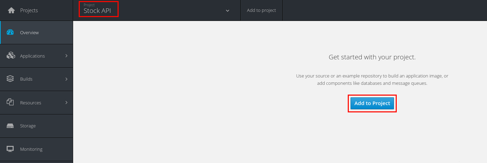
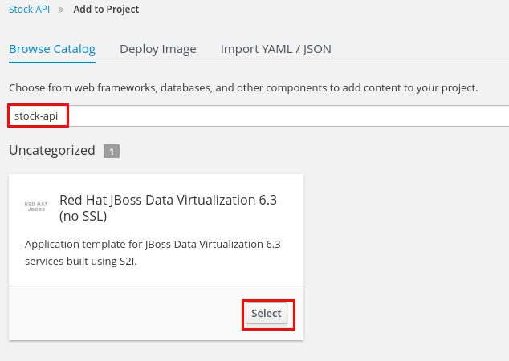
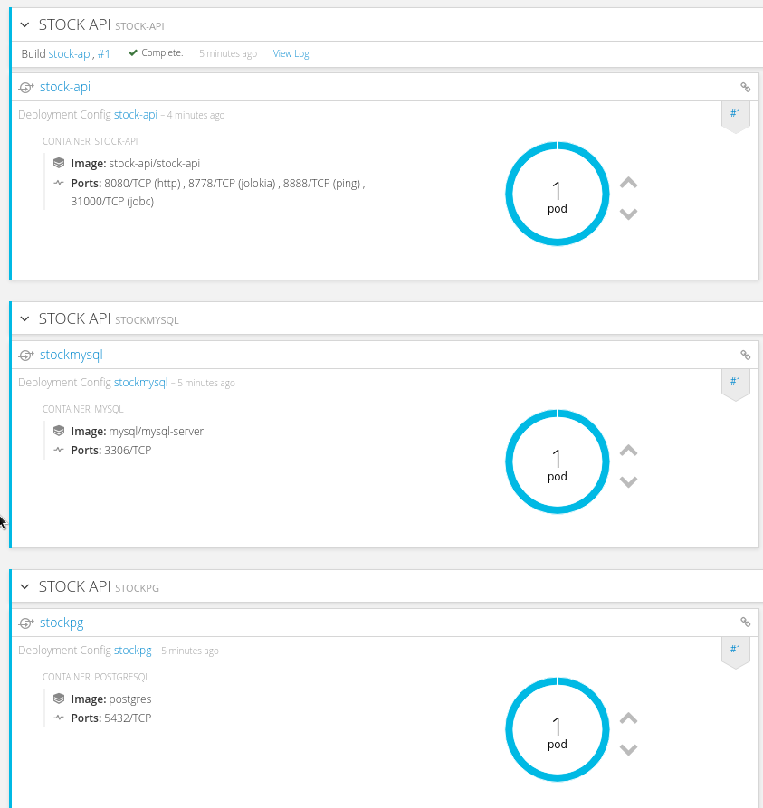
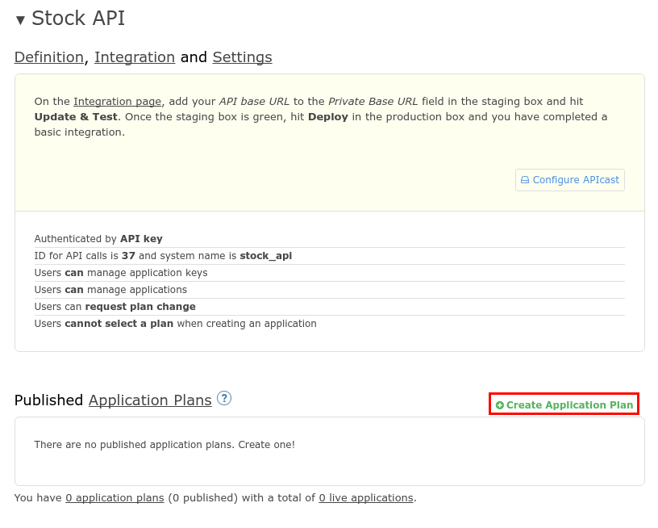
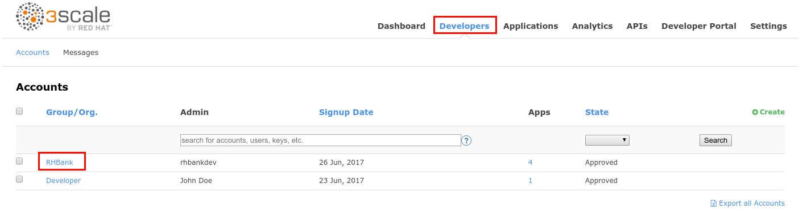
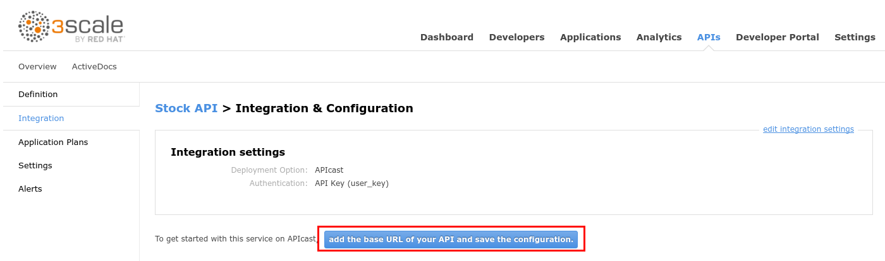
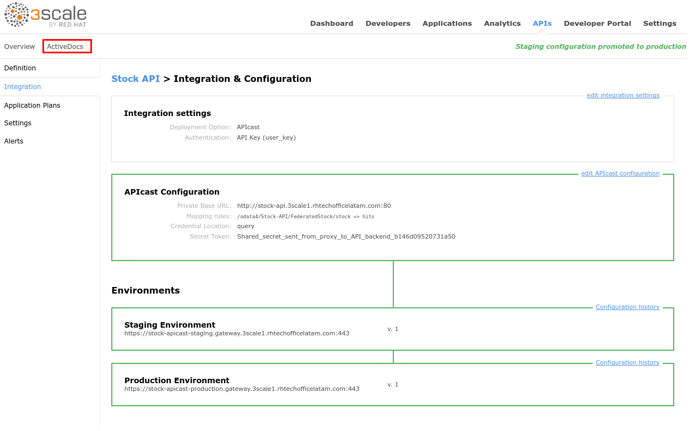
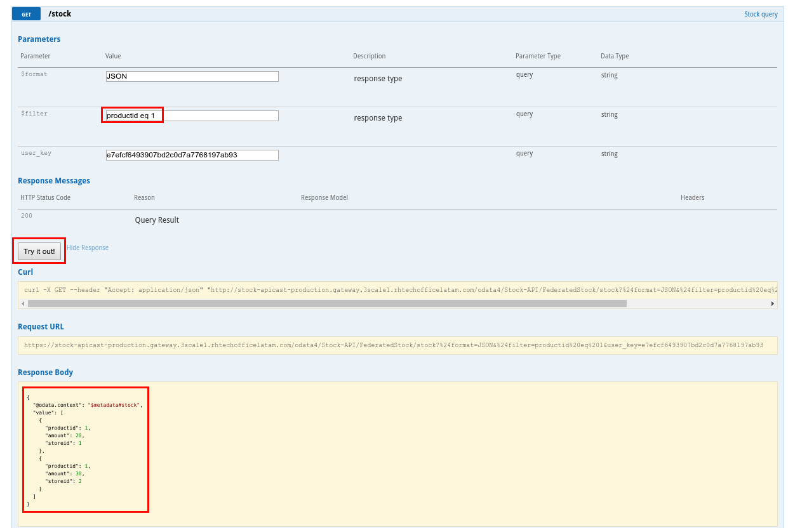

Lab 8 - Exposing an OData Service with JDV
 |
In this lab you will deploy an OData service based on a JBoss DataVirtualization for Openshift (JDV) virtual database (VDB). This VDB has a virtual view that retrieves data from two databases’ tables (MySQL and PostreSQL) and present them as a single SQL ANSI table. Then, out of the box, this view is exposed in JDV as an OData REST service. You can find more info about JDV here: |
|---|---|
- Open a web browser and go to https://threescale.3scale[your instance #].rhtechofficelatam.com:8443/console/
- Login as admin/admin
- Select the Stock API project.
- Click on the Add to Project button.

- Enter stock-api in the Browse Catalog search field.
- Click on the Select button in the found template.

- Set the Custom http Route Hostname field to: stock-api.3scale[your instance #].rhtechofficelatam.com.
- Scroll down to the bottom of the page and click on the Create button.
- Click on the Continue to overview link.
- In ~5min, a JBoss DataVirtualization service will be deployed to OpenShift along with two databases: a MySQL and a PostgreSQL instance.

- When the three circles are blue, open a new web browser tab and go to http://stock-api.3scale[your instance #].rhtechofficelatam.com/odata4/Stock-API/FederatedStock/stock?$format=JSON

- You should receive JSON document with Stock information coming from the Virtual DataBase(VDB) deployed in the JBoss DataVirtualization container.
 |
JDV is a data integration tool that allows you to connect to different data sources in real time and present a unified SQL view to the data consumer. |
|---|---|
- Go to https://3scale-admin.3scale[your instance #].rhtechofficelatam.com
- Login as admin/admin
- Click on the APIs tab.
- Click on the Create Service link.

Enter the following values:
Name: Stock API
- System Name: stock-api
- Description: Stock API

- Scroll down to the bottom of the page and click on the Create Service button.
- Click on the Create Application Plan link.

Enter the following values:
Name: StockPremiumPlan
System Name: stockPremiumPlan
Click on the Create Application Plan button.

- Click on the Publish link.
- Click on the Developers tab.
- Click on the RHBank account.

- Click on the 4 Applications breadcrumb.
- Click on the Create Application link.

Enter the following values:
Application Plan: StockPremiumPlan
- Name: StockApp
Description: Stock Application
Click on the Create Application button.

- Click on the Stock API link.
- Click on the Integration tab.
- Click on the add the base URL of your API and save the configuration button.

Enter the following values:
Private Base URL: http://stock-api.3scale[your instance #].rhtechofficelatam.com
- Staging Public Base URL: https://stock-apicast-staging.gateway.3scale[your instance #].rhtechofficelatam.com:443
Production Public Base URL: https://stock-apicast-production.gateway.3scale[your instance #].rhtechofficelatam.com:443
Click on the edit icon next to the GET operation under Mapping Rules.
- Enter /odata4/Stock-API/FederatedStock/stock as the Pattern.
- Enter /odata4/Stock-API/FederatedStock/stock?$format=JSON in the API test GET request.
- Click on the Update & test in the Staging Environment.

- Click on the Back to Integration & Configuration link.
- Click on the Promote v.1 to Production button.
|
OData URLs in JDV are formed using the following syntax: |
|---|---|
- Click on the ActiveDocs tab.

- Click on the Create a new spec link.
Enter the following values:
Name: Stock API
System Name: stockApiSpec
Open a new web browser tab and go to https://raw.githubusercontent.com/pszuster/3ScaleTD/master/Stock/stock-api-swagger.json
- Copy the contents of the json file (Ctrl+A, Ctrl+C).
- Close the browser tab.
- Paste the json file to the API JSON Spec field.
- Change the host attribute to stock-apicast-production.gateway.3scale[your instance #].rhtechofficelatam.com, to match your instance #.

- Scroll down to the bottom of the page and click on the Create Service button.
- Click on the Publish button.

- Open a web browser tab.
- Go to https://stock-apicast-production.gateway.3scale[your instance #].rhtechofficelatam.com/odata4/Stock-API/FederatedStock/stock
- Accept the SSL Certificate.
- Close the tab and go back to 3Scale’s tab.
- Expand the /stock operation.
- Enter JSON in the $format field.
- Click on the user_key field and select the StockApp user key.
- Click on the Try it out! button.

- You should receive an OData JSON document.
- Enter “productid eq 1” in the $filter field.
- Click on the Try it out! button.

- You should receive an OData filtered JSON document.
| | The $filter field specifies a “WHEN” condition for the query, “productid” is one of the columns of the virtual view, and “eq 1” means “=1”. |
| --- | --- |